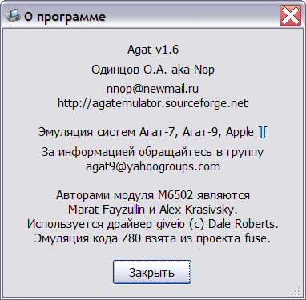

Главное окно эмулятора служит для выбора, создания, настройки эмулируемых систем, а также для управления их работой.
В левой части окна расположен список имеющихся систем. Тип каждой системы отображается в виде пиктограммы, под которой размещается название системы.
Запуск системы может быть произведён двойным щелчком мышью на соответствующей пиктограмме, либо выделением пиктограммы и нажатием кнопки "Запуск".
Завершение работы системы производится нажатием кнопки "Стоп" в главном окне, либо простым закрытием окна системы.
Кроме этого, главное окно эмулятора содержит кнопки создания и изменения конфигурации, а также кнопку вызова справки и сведений о программе:

Кнопка "Настройки" используется для задания глобальных настроек эмулятора.
Выход из эмулятора осуществляется закрытием главного окна или нажатием кнопки "Выход".
В случае, если в момент завершения работы эмулятор содержит запущенные системы, выдаётся предупреждение:
Созданные конфигурации хранятся в подкаталоге systems каталога установки эмулятора в виде файлов с расширением .cfg. Это может быть использовано для расширенного управления системами, например, их копирования, переименования или переноса между эмуляторами.
В подкаталоге saves размещаются сохранённые состояния систем в виде файлов с именем соответствующей системы и расширением .sav.
См. также: Создание новой конфигрурации, Изменение конфигурации, Главное меню